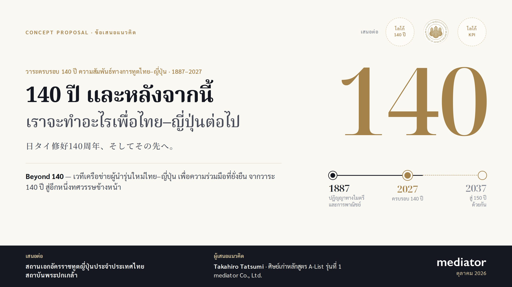
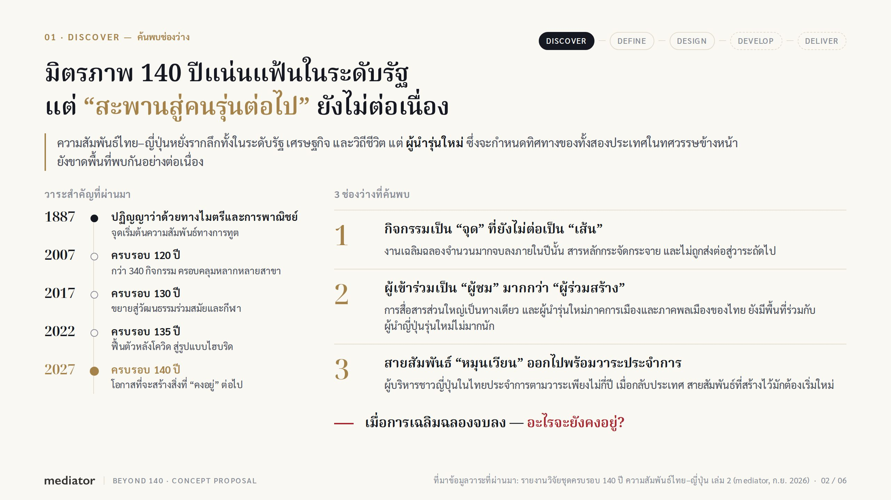
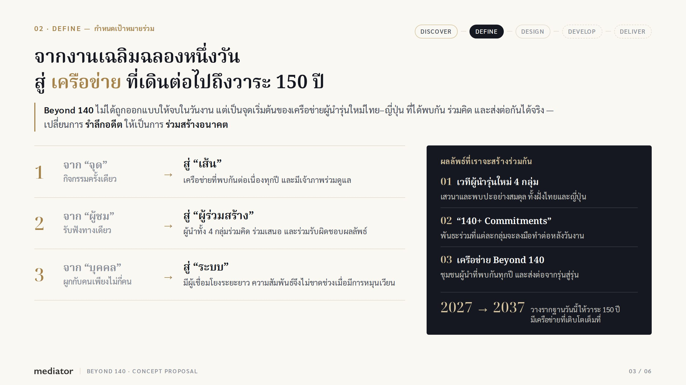
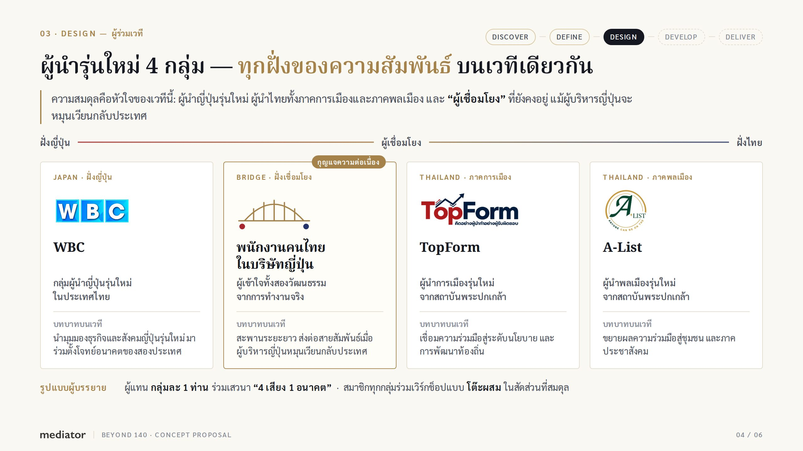
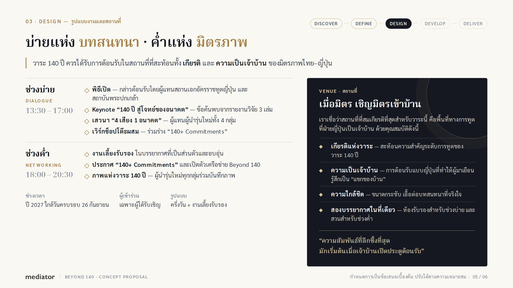
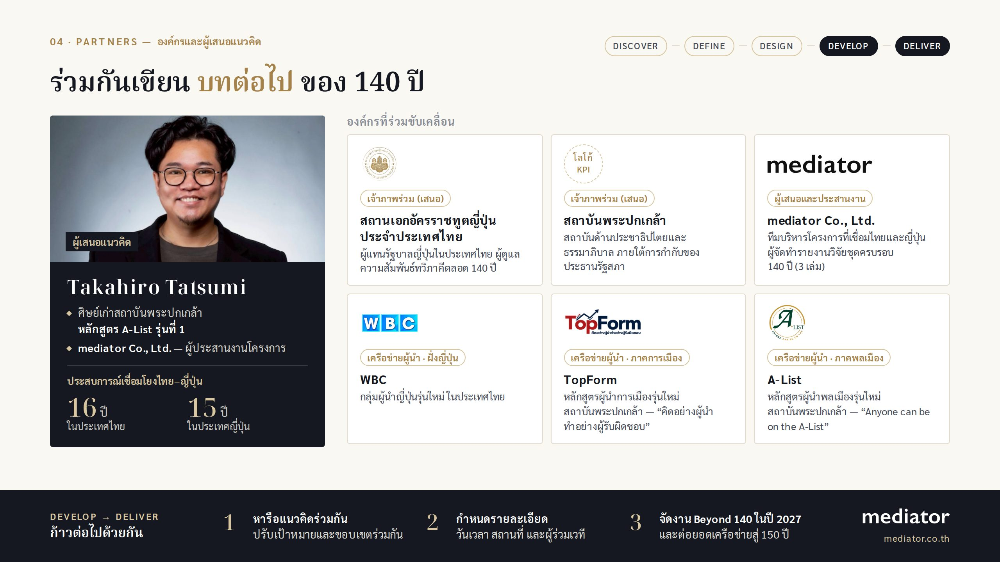

Beyond 140 · Slide Outline & Presenter Notes
โครงสร้างข้อเสนอ 6 หน้า และบันทึกผู้นำเสนอ
ประกอบเดค Concept Proposal · เสนอต่อ สถานเอกอัครราชทูตญี่ปุ่นประจำประเทศไทย และสถาบันพระปกเกล้า · ตุลาคม 2026

ประกอบเดค Concept Proposal · เสนอต่อ สถานเอกอัครราชทูตญี่ปุ่นประจำประเทศไทย และสถาบันพระปกเกล้า · ตุลาคม 2026





